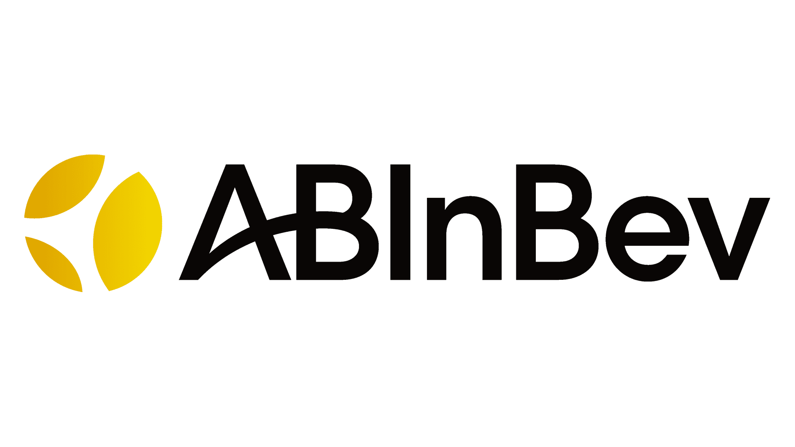

ABInBev Dashboard and POS Visit Documentation
Merchandiser Platform

ABInBev provides a digital solution for merchandisers to manage point of sale (POS) visits, track sales, and monitor performance. The platform consists of a Merchandiser Enrolment Form to generate personalised visit links, a POC Visit Form for conducting visits, and a Dashboard for overview and analytics.
Simple, efficient, and accessible on desktop.
User Guide
Getting Started
Using the Platform
Dashboard and Reports
—
Quick Access to the Platform
Merchandiser enrolment form URL: https://abinbevform.kaeyros.org/sales-representative/form
Dashboard URL: https://abinbev-dashboard.kaeyros.org/dashboard
This comprehensive documentation will guide you through all the features of ABIn Bev from the merchandiser enrolment to advanced use of the platform.